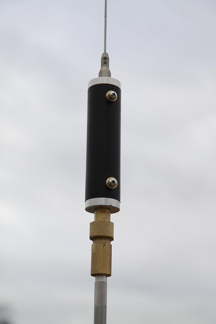

Last Modified: October 9, 2012
Contents: Basics; Home Brewing A Coil; Some More Ideas; Masts; What Can Be Done; Mounts; Odds & Ends;
Over the years, I've built dozens of different ones. Some have utilized commercial parts (modified and raw), some home brew parts, and a few defied description. If I have any regrets, it is that I didn't take pictures of them all.
The basic HF mobile antenna scenario really isn't complicated. You need some sort of mount, a mast, a coil, a whip, and (hopefully) some sort of matching device. The problem is nowadays, you just can't find the individual parts. And when you do, they want your first-born as payment! I'll give you a very good example.
During the late 70s, I worked for CW Electronics in Denver. They were the only amateur radio retailer within 500 miles. We sold just about every kind of amateur radio gear you could name, most of the nonproprietary parts to repair them, the tools to fix them, and everything in between.
One of the requisite parts for any mobile antenna (save for 10 meters) was a loading coil. At the time, the largest manufacturer was B&W (Barker & Williamson). The trade name for their coils was Airdux®. They were made in a variety of lengths and diameters. They ones I liked were the 2000 series. A piece of the 2004T was enough coil to build two 20 meter coils. A piece of 2006T was enough to make a 40 meter loading coil, with enough left over to built a 15 meter one. The cost was less than $8 each. A quick check of their web site will show the current price at $65 each! If you opt for a really good coil, you'd have to use their 4804TL. Which now, incidentally, sells for $500 each! It is no wonder that companies like Texas Bug Catcher opted to wind their own.
So in reality, what this article is about is where to find the parts to home brew your own. If you wish to call it DIY (Do It Yourself), fine as I don't have an argument about that. What's more, to me at least, it doesn't make any difference what "parts" you use. If you designed it, and it works, it is yours! What's more, there is a big measure of pride that comes from rolling your own.
So what you see here is not so much a home brew how to, but a few links and suggestions that will aid you on your quest. Whatever avenue you take, you need to bone up on antenna design. The first place to start is the ARRL Handbook.
If you're resourceful enough, it is easy to make your own loading coils. There are several aspects you need to be aware of. Most important is the material you use for the core of the coil.
Any material in close proximity of the loading coil will reduce its Q. This includes end fittings where the mast and whip attach. For example, the very large end caps used on Hustler's high power coils reduces their Q so much, the smaller coils are actually better in terms of loss.
A lot of home brewers use PVC for coil forms. On the lower bands, white PVC works fairly well, but its dielectric strength diminishes as you approach 25 MHz. The gray PVC is not suitable for any RF application. Lexan® and Delrin® both work well, but are somewhat more expensive.
The hardest part to fashion, if you don't have a lathe, is the end fittings. One alternative is to use brass pipe plugs. The 3/4 inch size will snugly screw into 1 inch schedule 40 PVC. You should cross drill them, and either use a screw clear through the pipe, or you can tap the hole. A 10 x 32 by 1/2 inch works well. The cross drilling should be done about 1/4 inch above the bottom of the pipe plug. The reason for this will become evident later on.
The shoulder inside of a 3/4 inch brass pipe plug is just right for drilling and tapping for 3/8 x 24 threads. The resulting thread is almost a 1/2 inch long which is adequate in most cases. It is best to have a drill press, but if you have a good vise and a decent hand drill you'll be okay.
You should drill the hole using a 21/64 bit, and the plug should be held securely. Remember, brass swarf (the curl of metal that spirals off during machining) tends to bind the bit. High speed and light pressure is the key.
If you use a drill press here is a little secret. Once you complete the hole, don't move the work piece. Remove the drill and insert the tap into the chuck. Then manually (no motor!) start the tap into the pipe plug a couple of turns. This will assure that the tap is in straight. Then release the tap, and finish with the tap wrench.
 The photo shows one end cap of the coil fully assembled into the 2 inch PVC pipe cap. Here are a few tricks of the trade you need to know.
The photo shows one end cap of the coil fully assembled into the 2 inch PVC pipe cap. Here are a few tricks of the trade you need to know.
First, finding the center of the PVC pipe cap is a little difficult. One way to find it is to file a flat on the rounded end. Then use a compass to make several arcs across the flat. Their intersection will be close enough to the center. A 1 inch spade bit will drill a neat hole.
Next, the outside diameter of 1 inch schedule 40 PVC pipe, is slightly larger than 1 inch. So you have to clean up the hole in the PVC cap so the 1 inch PVC pipe will fit through the hole. Make sure the fit is very snug. The cross bolt (or threaded screws if you went that route) should just touch the inside of the PVC cap, and the 1 inch pipe and its brass plug in place, should be flush with the outside.
 You want to make careful measurements with respect to the length of the 1 inch PVC pipe, and the 2 inch PVC pipe so that the mate just as described. Although the 2 inch caps are made to accept up to 1 1/4 inches of pipe, it is very difficult to drive them together since the cementing will be done after assemble. In the photo, the center 1 inch pipe is 7 1/2 inches long, and the 2 inch pipe is 5 1/2 inches long, or 1 inch of insertion on each end. Even then you'll need to tap them together. Use a block of wood, or a rubber hammer to do this.
You want to make careful measurements with respect to the length of the 1 inch PVC pipe, and the 2 inch PVC pipe so that the mate just as described. Although the 2 inch caps are made to accept up to 1 1/4 inches of pipe, it is very difficult to drive them together since the cementing will be done after assemble. In the photo, the center 1 inch pipe is 7 1/2 inches long, and the 2 inch pipe is 5 1/2 inches long, or 1 inch of insertion on each end. Even then you'll need to tap them together. Use a block of wood, or a rubber hammer to do this.
You'll need to drill 4 holes for the wire to snake through. A 1/8 inch drill bit is about right for most coil material. Drill them close to the assembled 2 inch caps as seen in the photo, and one inch apart. You can then angle the drill to make the holes into slots. You can barely see this in the photo.
By the way, you could use 2 inch long 3/8 x 24 bolts and nuts for the end connections. If you go this route, here's a few suggestions. First, file off a flat on the PVC cap with a rasp or coarse file. This makes drilling the 3/8 inch hole a little more precise. Don't use regular bolts. Spend the money, and buy grade 8 bolts. They don't rust as easily, and they are stronger for sure. A dab of JB Weld or DYI epoxy to the inside it warranted for obvious reasons. After the epoxy sets up, you can remove the outer nut to install a wire lug for the connection. Put the nut back on to assure a good connection.
Once you're satisfied that the coil form is like you want it, it is time to cement it together. You can use standard PVC cement, but I find it easier to use acetone. A small glass syringe made for the purpose is available from any good hobby store. A small amount should be applied to the 2 inch pipe seams. You can glue the center 1 inch pipe by squirting the acetone through the wire holes. Enough should be used until it runs out around the seam. Be careful as acetone is flammable, and will mar just about any surface it touches.
 The amount of wire is dependent on how much inductance you need. If you've read this far, I'd like to believe you're serious about the project. In which case, you've already read the ARRL Handbook or Antenna book, and know how to calculate what you need. It doesn't have to be exact, but it does have to be close. Here's an on-line calculator you can sue too.
The amount of wire is dependent on how much inductance you need. If you've read this far, I'd like to believe you're serious about the project. In which case, you've already read the ARRL Handbook or Antenna book, and know how to calculate what you need. It doesn't have to be exact, but it does have to be close. Here's an on-line calculator you can sue too.
Note the pigtail in the photo. A wire lug soldered on, and placed under the whip or mast will make an adequate connection. If you have to, you can remove a turn or two. In any case, the length of the whip will determine the final resonant point.
The wire you use can be almost anything. The wire in the photo is #12 Thermalese, but building wire may be used. I just wound the coil randomly for the photos. If you need a large inductance you may want to close wind the wire, or do your best to space it evenly as you can. One way to do this is to use trimmer string which comes is several sizes. You just wind it along with the wire in parallel windings, and as taught as you can.
Next, spray on a little high voltage lacquer (about $3 a can at most hardware stores), and just before the lacquer sets up hard (about 10 minutes), remove the trimmer string. A few more coats of HV lacquer, and the coil will stand up to almost any weather.
As I said before, this is a method I have used to construct mobile loading coils. It is not a primer of where to place the coil in the antenna, or how much inductance it must have for some frequency, and over all length; all of that information is in the ARRL Handbook.

 I would not of thought of this, but David Stall, AE5DS, did. What you see in the left photo is a special coil form made by Breedlove Machine Shop. It is actually an elongated version of their HV insulator made for use with an auto-coupler. The screws you see are threaded into the end bosses, which are bored for 3/8x24, making them compatible with existing antenna hardware.
I would not of thought of this, but David Stall, AE5DS, did. What you see in the left photo is a special coil form made by Breedlove Machine Shop. It is actually an elongated version of their HV insulator made for use with an auto-coupler. The screws you see are threaded into the end bosses, which are bored for 3/8x24, making them compatible with existing antenna hardware.
The right photo shows the completed coil. The wire used #14 awg, but it looks much bigger. The reason is, David used some nylon rope as a spacer for the coil turns. As long as moisture doesn't get in, that's a good way to keep the turns evenly spaced. The tape is vinyl electrical tape, but Rescue Tape might be a better solution as it seals out moisture better.
One thing to remember if you duplicate this method is to keep the coil turns away from the screws to minimize Q losses, as David has done. The aforementioned on-line calculator can be used to approximate the required turns needed. Once you have that calculation, the requisite length form can be ordered from Breedlove.
All in all, I think it is a novel idea, one that is easily duplicated, and the completed antenna is certainly full of DIY pride!
 I can't tell you how many different masts I have used over the years. I've used fiberglass ones with copper wire buried inside of them, steel, aluminum, copper water pipe, stainless steel, chrome moly, and even wood! Lengths varied from a foot or so, to one 10 feet long.
I can't tell you how many different masts I have used over the years. I've used fiberglass ones with copper wire buried inside of them, steel, aluminum, copper water pipe, stainless steel, chrome moly, and even wood! Lengths varied from a foot or so, to one 10 feet long.
DX Engineering sells ready-made masts in several different lengths, and they are reasonably inexpensive. You can still find Texas Bug Catcher masts, although they're now out of business.
You can homebrew your mast too. Mike Brueggemann, K5LXP, has the answer on his web site. For less than $10 you can buy enough material to build two masts using his method.
While copper pipe works well, DIY (Do It Yourself) steel tubing will work to. Fact is, the 1/2 inch diameter material is will accept a 3/8 x 24 bolt if you cut off the head. The bolt can be brazed in, along with a nut to tighten it down to. A coat of paint, is all it needs. If you look in the Photo Gallery under W5LLD, you'll see one of these. This particular mast is 4 feet long, and the loading coil is from an old ARC5.

 This antenna was built by Jerry Clement, VE6AB. Admittedly, Jerry is a first-class machinist, with the equipment, and know how to design an antenna from scratch. He didn't copy anyone else's design, rather he started with a clean sheet of paper. You can get a closer look by clicking on the photo. There are several other views in the Photo Gallery under his call (use the search function in the upper right corner of the album).
This antenna was built by Jerry Clement, VE6AB. Admittedly, Jerry is a first-class machinist, with the equipment, and know how to design an antenna from scratch. He didn't copy anyone else's design, rather he started with a clean sheet of paper. You can get a closer look by clicking on the photo. There are several other views in the Photo Gallery under his call (use the search function in the upper right corner of the album).
The coil form, 4 inch OD by 9 inches long, is made from clear Lexan®, and wound with 14 gauge, tinned bus wire. The tuning sleeve is made from 16 gauge aluminum, including the spun-aluminum bottom section. The finger stock is beryllium copper.
In this photo, the antenna is tuned to 80 meters. Although the overall length, coil diameter, pitch, and wire size are identical to his previously used, commercially-built antenna, 6 less coil turns are required to resonant the antenna. This enhanced performance is a result of the end caps being made from Delrin®, rather than aluminum. There are brass inserts for the mast, and whip connections, however.
 Of the literally hundreds of home brew antennas I've seen over the years, Jerry's takes the Blue Ribbon prize. It is, indeed, a work of art. Form follows function as they say, and so does performance in this case.
Of the literally hundreds of home brew antennas I've seen over the years, Jerry's takes the Blue Ribbon prize. It is, indeed, a work of art. Form follows function as they say, and so does performance in this case.
Before the aforementioned multiband antenna was made, Jerry made a 75 meter single band one. Although he wrote an article about the construction techniques used, it didn't appear in the pages of QST until July, 2011, starting on page 39. Like the multiband unit, it too is a work of art. If you read the article, you'd know why; Jerry has a well-equipped machine shop to work in.
I like to think every amateur has enough tools and wherewithal to make whatever brackets they need. However, this pie-in-the-sky notion isn't reality. If you look over my Install article, or the Photo Gallery, you'll see all matter of home brew brackets holding everything from antennas, to remote heads, batteries, and more. Some of them were fashioned by the amateurs themselves, and some had the help of a machine shop and/or welding shop. No matter, if you designed it, it is yours, and that fact makes it a home brew project. I can't speak for you, but I get great joy (and pride) in making all manner of brackets, and even electronics that I install in my vehicles.

 At left are a few examples of home brew brackets made out of DIY aluminum. Not all were successful, and that's part of the fun. The bracket on the left was used to mount a 1 Farad cap which I don't use any more. The one on the right secured one end of an SG235 Auto-coupler. The one in the middle didn't work like I thought it would. In fact, I remade the bracket three times before I got it like I wanted.
At left are a few examples of home brew brackets made out of DIY aluminum. Not all were successful, and that's part of the fun. The bracket on the left was used to mount a 1 Farad cap which I don't use any more. The one on the right secured one end of an SG235 Auto-coupler. The one in the middle didn't work like I thought it would. In fact, I remade the bracket three times before I got it like I wanted.
The bracket shown at right is made out of self-reinforcing polyphenylene, better know as TecaMax®. Its dielectric strength goes beyond 1 GHz. One nice thing about TecaMax®, it can be worked with normal woodworking tools. It drills well, but for holes over 3/8 inch, you should use a Forstner® or spade bit. If you thread it, use a bit one number smaller than recommended, and back out often! And I wouldn't use fine thread sizes either. In other words, treat it like soft aluminum, and go slow! TecaMax®, like Delrin®, is also very slick (nearly as slick as Teflon®), and is easily melted. You also have to be careful as it 'snatches' easily, so clamp your work!
Another fine RF transparent plastic is Noryl®. It comes in both plain and fiberglass reinforced versions. It is very dark gray (almost black) in color, and is twice as expensive as Delrin®. A one inch thick slab, twelve inches square is about $200. One of the reasons it is so expensive, is the formulation necessary to make is as strong as it is. In fact, there are few plastic with greater strength. Like Delrin®, it is easily shaped and cut, and it threads better than aluminum.
By the way Professional Plastics sells all kinds of remnants in just about every kind of plastic imaginable. For example, a 25 pound box of Delrin®. remnants sells for $75 plus shipping. The pieces are at least 3"x3", and vary in thickness. The box I ordered had seven pieces larger than 6"x6", and most of it was 3/4 and 1 inch material. There was even a few pieces of rod and tubing. It is a home brewer's delight, and worth the money. They don't always have remnants, so it pays to give them a call even though they are shown on their web site.
The point I'm trying to make here is simply this; brackets can be made from a variety of materials. I've seen one very well made bracket fashioned from ironwood (Olea Laurifolia). It was nicely shaped, drilled, tapped, and finished in gloss black lacquer. With brass hardware, it looked right at home in a 2001 Bentley!
What ever your level of expertise is, a home brew project can bring a lot of satisfaction. Besides, it keeps you out of the spouse's hair for a while.
 One often recommended method to check the dielectric strength of an unknown plastic, is to place a sample in the microwave and turn is on for a few seconds. That may indeed work, but you have to be very careful! Some forms of PVC will explode into flames after just a couple of seconds.
One often recommended method to check the dielectric strength of an unknown plastic, is to place a sample in the microwave and turn is on for a few seconds. That may indeed work, but you have to be very careful! Some forms of PVC will explode into flames after just a couple of seconds.
Most folks won't go through the exercise to build their own coils. However, I'd like to think it is a good way to learn about the intricacies of mobile antennas. There is, after all, more to it that just the three parts; mast, coil, and whip.
If you buy all of the parts, drills, taps, and pieces, you'll end up spending about $50. I already had most of the material, and all I had to buy were the 2 inch PVC caps, and the 3/4 inch pipe plug. The grand total was under $4.
I mention this in my Antenna Mounts article, but it merits mentioning here too. Professional Plastics sells all kinds of remnants in just about every kind of plastic imaginable. For example, a 25 pound box of Delrin® remnants sells for $75 plus shipping. The pieces are at least 3"x3", and vary in thickness. The box I ordered had four pieces larger than 6"x6", and most of it was 3/4 and 1 inch material. There was even a few pieces of rod and tubing. It is a home brewer's delight, and worth the money. Remember, Delrin®, in its natural color, is RF transparent up to about 2 GHz. It can be used for all sorts of insulators, braces, coil forms, and mounting brackets. Since it works just like wood, standard shop tools are all you need. As an added bonus, it thread taps very well. However, you should use one number drill smaller than would be otherwise required. This assure a good, solid thread. The only caveat, Delrin® melts easily, so go easy with the drilling, and use Forstner bits when you can.
Occasionally, you can find Parmax®, one of the world's strongest plastics, in remnant form too. It machines and drills much like aluminum, but weighs a bit more. I found a piece about one foot square by one inch thick, for just over $50. It makes excellent replacement insulators for ballmounts.
Before you plan, or complete, any antenna installation, do yourself a favor, and read my Grounds, RF & DC article.
The next article you need to read is Antenna Mounts.
The next article after that is Antenna Matching.
Bonding is also very important. Bonding maximizes the performance of any antenna system, and minimizes the chances of of RFI ingress and egress.
If you have RFI issues, and you don't know what they are, read my Noise ID article.
If you're plagued with static, you might want to read my Static Control article.